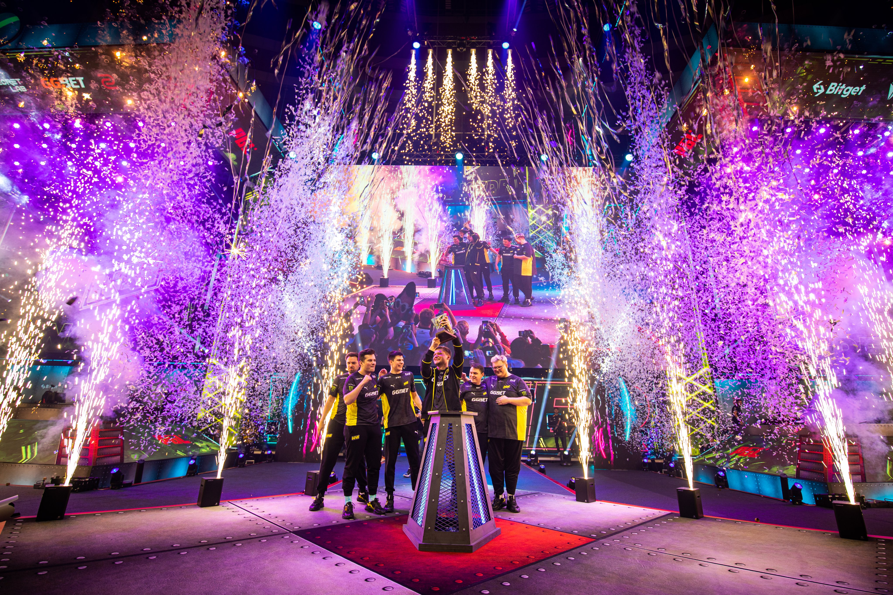
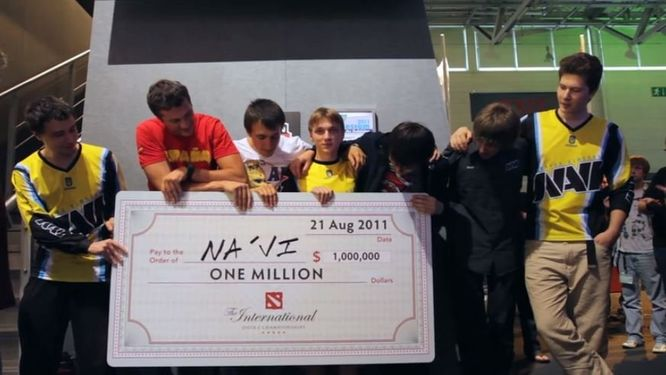
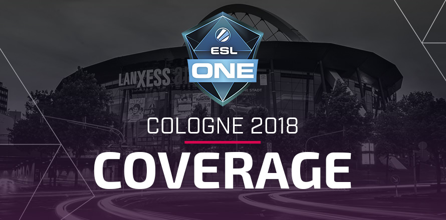

Le Major de Stockholm 2021 : Une Victoire Historique Le PGL Major
Stockholm 2021 restera gravé dans l’histoire de Counter-Strike: Global
Offensive (CS:GO) comme l’un des tournois les plus dominés par une
seule équipe. Après des années à être proche du sacre, NaVi a marqué
ce Major en s’imposant sans perdre une seule carte. Avec un s1mple en
état de grâce et un collectif parfaitement rodé, l’équipe ukrainienne
a survolé la compétition en éliminant tour à tour les meilleures
formations du monde, notamment G2 Esports en finale. Cette victoire a
confirmé NaVi comme la meilleure équipe de CS:GO de l’époque, une
consécration méritée après plusieurs finales perdues dans le passé. Ce
tournoi a non seulement marqué l’histoire de l’esport, mais il a
également scellé l’héritage de s1mple, souvent considéré comme le plus
grand joueur de CS:GO. Pour NaVi, ce Major a été bien plus qu’un
trophée : il a symbolisé l’aboutissement d’années d’efforts et de
persévérance.

The International 2011 : La Légende de NaVi en Dota 2 Lorsque The
International 2011 (TI1) a été annoncé, NaVi était déjà une équipe
respectée sur la scène Dota 2, mais personne ne s’attendait à une
telle domination. À une époque où le jeu était encore en pleine
évolution, NaVi a imposé son style agressif et stratégique, écrasant
ses adversaires et remportant le premier tournoi majeur de Dota 2.
Dendi, le joueur emblématique de cette époque, est devenu une légende
grâce à ses moves spectaculaires et son gameplay innovant. La finale
contre EHOME reste l’une des plus mémorables de l’histoire de Dota 2,
avec des stratégies et des actions qui sont encore étudiées
aujourd’hui. Cette victoire a posé les bases de la suprématie de NaVi
sur Dota 2 durant les années suivantes. Même après plus d'une
décennie, The International 2011 reste l'un des moments les plus
iconiques de l’histoire de l’esport, et NaVi en a été le grand
protagoniste.

ESL One Cologne 2018 : Un Chapitre Inoubliable L’ESL One Cologne 2018
est souvent surnommé le "Cathedral of Counter-Strike", et pour cause :
cet événement est l’un des plus prestigieux du circuit CS:GO. NaVi y a
écrit l’un des plus beaux chapitres de son histoire en surclassant ses
adversaires avec un niveau de jeu exceptionnel. L’équipe menée par
s1mple et electronic a prouvé sa supériorité tactique et mécanique
face à des équipes comme Astralis et FaZe Clan. La finale contre BIG a
été une démonstration de force, où NaVi n’a laissé aucune chance à ses
adversaires, remportant le tournoi devant un public en délire à
Cologne. Cette victoire n’a pas seulement apporté un nouveau trophée à
leur palmarès, mais elle a également confirmé leur capacité à briller
sur les plus grandes scènes du monde. L’ESL One Cologne est un tournoi
à part, et cette édition 2018 restera gravée comme l’une des plus
grandes réussites de NaVi en CS:GO